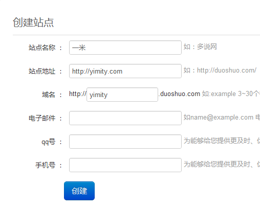
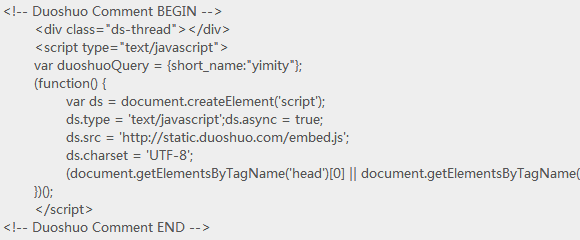

多说评论系统介绍
多说评论系统使用说明
1. 网站后台，主题设置页面，选中 “使用多说评论系统” 。
2. 在出现的输入框中，输入多说分配的子域名的代码，例如：多说分配（自己注册时）的域名为：yimity.duoshuo.com 那么就填入 “yimity”。
关于短代码的获取
1. 请在此处注册新网站，http://duoshuo.com/create-site/ 进入之后，创建新网站，注意域名和二级域名一定要正确。二级域名自己填写的部分，将要输入到 2 中的输入框中。
2. 如图示：创建新网站成功后，请将图中 “域名” 处，输入的英文，输入到 2 中的输入框中。

3. 或者进入到下一步之后，将如图所示的代码中的 var duoshuoQuery = {short_name:"yimity"}; 的yimity 填入即可。

说明：
如果选中了 “使用多说评论系统” 但并没有输入多说分配的域名短代码，系统默认还是 WordPress 默认评论系统。
此为测试系统，不建议直接上线使用，建议使用 WP 插件，可以同时在本地和多说存储评论，并转换本地老评论。访问。